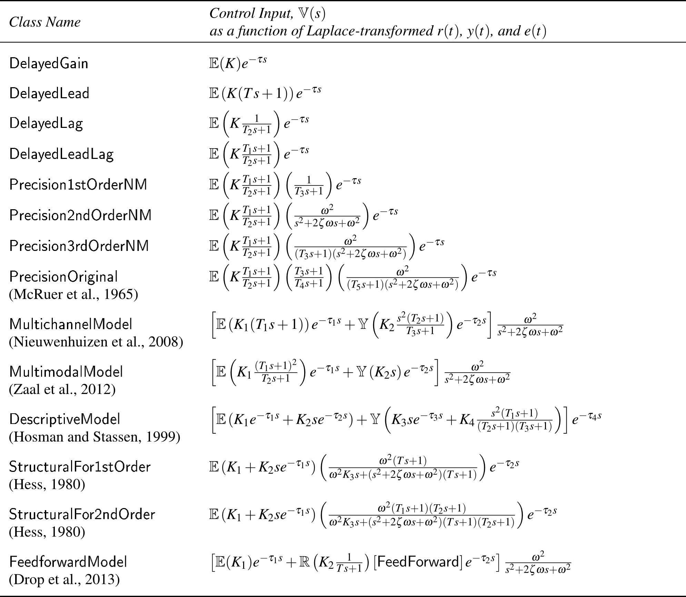

Human control behavior while tracking an unpredictable signal can be modeled using tools and techniques from control theory. These models are generally either structural or algorithmic in nature. Structural models use explicit equations and parameters to model human control pathways and the human's resulting input-output response. Algorithmic models use a more implicit optimal control formulation, where only the human's total response is computed. This library includes only structural models.
Structural manual controller models have taken many forms, but most include one or more of the control pathways shown in the above figure. Nearly all controllers include the compensatory pathway, which acts on the error between the reference and measured state. Manual tracking experiments that display only this error, and not the reference and measured states independently, are called compensatory tracking tasks.
If the reference state and the measured state are displayed to the human, then they can be used for the feedforward and pursuit control actions. The presence of pursuit information does not guarantee pursuit control will be used, and the absence of pursuit information does not guarantee pusuit control will not be used. The neuromuscular filter accounts for the lag imposed by limb dynamics and neuromuscular delays. The human senses the filtered input using the proprioceptive pathway, and compares it to the desired input.
Once the human's control input is determined, a disturbance input is added. This can be used for a disturbance rejection task, or to add remnant to the controller model. Remnant accounts for the human's control input that is not predicted by the model.

Included manual controller models are shown in the above table. The model PrecisionOriginal was proposed by McRuer and his colleagues, and various simplified versions with one of the lead-lag terms removed have been used since then. These versions mainly differ in how they represent the human's neuromuscular filter. The MultimodalModel and DescriptiveModel both include pursuit control, but they have different ways of organizing the human's control pathways.
The FeedforwardModel includes feedfoward control. For this control pathway, an inverted model of the plant dynamics is needed, and the controller automatically uses the block ManualTracking.Blocks.FeedForward for this purpose. To change the inverse dynamics block, or to make the controller use a different block, the Modelica file text must be modified manually.
Once the controller is selected, the next task is to choose values for controller parameters. In the class definitions of each controller, parameters have a specified minimum and maximum value. Whenever possible, these values are based on experimental data from the literature. Python tools provided with the ManualTracking library can help select these values -- they are selected either to yield optimal tracking performance, or the closest fit to experimental control behavior.